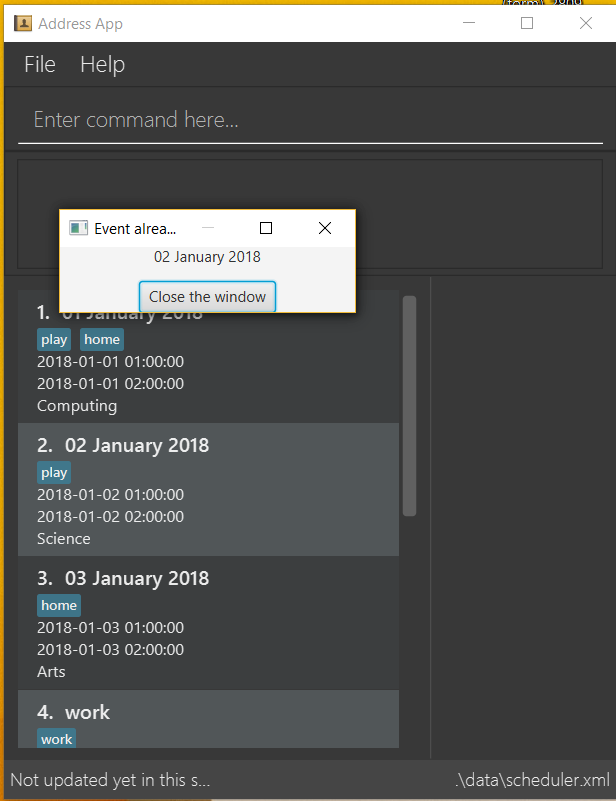

By: CS2103-AY1819S1-F11-1 Since: Sep 2018 Licence: MIT
- 1. Introduction
- 2. Quick Start
- 3. Features
- 3.1. Viewing help :
help - 3.2. Adding an event :
add - 3.3. Listing all events :
list - 3.4. Editing an event :
edit - 3.5. Locating events by event name:
find - 3.6. Deleting an event :
delete - 3.7. Selecting an event :
select - 3.8. Listing entered commands :
history - 3.9. Undoing previous command :
undo - 3.10. Redoing the previously undone command :
redo - 3.11. Clearing all entries :
clear - 3.12. Exiting the program :
exit - 3.13. Saving the data
- 3.14. Get Events From Google Canlendar :
getGCEvents - 3.15. Post Events to Google Canlendar :
postGCEvents[coming in v1.3] - 3.16. Encrypting data files
[coming in v2.0]
- 3.1. Viewing help :
- 4. FAQ
- 5. Command Summary
1. Introduction
iScheduler Xs Max is for those who prefer to use a desktop app for scheduling personal events. More importantly, this version is optimized for those who prefer to work with a Command Line Interface (CLI) while still having the benefits of a Graphical User Interface (GUI). If you can type fast, we can get your event scheduling tasks done faster than traditional GUI apps. Interested? Jump to the Section 2, “Quick Start” to get started. Enjoy!
2. Quick Start
-
Ensure you have Java version
9or later installed in your Computer. -
Download the latest
iScheduler Xs Max.jarhere. -
Copy the file to the folder you want to use as the home folder for your iScheduler Xs Max.
-
Double-click the file to start the app. The GUI should appear in a few seconds.
 -
Type the command in the command box and press Enter to execute it.
e.g. typinghelpand pressing Enter will open the help window. -
Some example commands you can try:
-
addadd n/Interview at Jane Street: adds an Event namedInterview at Jane Streetto the Event Scheduler. -
list: lists all events -
delete3: deletes the 3rd event shown in the current event -
exit: exits the app
-
-
Refer to Section 3, “Features” for details of each command.
3. Features
Command Format
* Some commands have an alias, which you can also use to execute the command e.g. to add an event to the scheduler, you can type either add n/Interview at Jane Street or a n/Interview at Jane Street.
* Words in UPPER_CASE are the parameters to be supplied by the user e.g. in add n/EVENT_NAME, EVENT_NAME is a parameter which can be used as add n/Interview at Jane Street.
* Items in square brackets are optional e.g n/EVENT_NAME [t/TAG] can be used as n/Interview at Jane Street t/serious or as n/Interview at Jane Street.
* Items with … after them can be used multiple times including zero times e.g. [t/TAG]… can be used as (i.e. 0 times), t/priority.low, t/fun t/serious etc.
* Parameters can be in any order e.g. if the command specifies n/EVENT_NAME v/VENUE, v/VENUE n/EVENT_NAME is also acceptable.
3.1. Viewing help : help
Format: help
3.2. Adding an event : add
Adds an event to the scheduler.
Format: add event n/EVENT_NAME [s/START_DATETIME] [e/END_DATETIME] [d/DESCRIPTION] [v/VENUE] [rt/REPEAT_TYPE] [ru/REPEAT_UNTIL_DATETIME] [t/TAG]…
Alias: a
| An event can have any number of tags (including 0) |
-
DATETIMEis the natural language of date and time in English. -
REPEAT_TYPEshould be chosen from either daily, weekly or monthly. -
TAGshould be chosen from the list of tags. Tags can be expressed as an integer(index) or in English
Examples:
-
add n/Study With Yoko s/tomorrow at 3pm d/Study again and again rt/MONTHLY ru/next friday 3pm t/ad-hoc -
add n/CS2103 Lecture s/23 September 2018 6pm e/24 September 2018 rt/WEEKLY ru/next monday t/timetable
Below are the supported formats of date and time:
3.2.1. Explicit dates
- Formal dates
-
Formal dates are expressed in integer values month, day and year separated by / or -.
- Format
-
-
MM-DD-YYYY -
MM/DD/YYYY -
YYYY-MM-DD -
YYYY/MM/DD
-
- Examples
Input |
Output |
10-15-2018 |
October 15 2018 |
10/15/2018 |
October 15 2018 |
2018-10-15 |
October 15 2018 |
2018/10/15 |
October 15 2018 |
- Relaxed dates
-
Relaxed dates are month, day and year expressed in a loose manner such as a combination of English and integers.
- Examples
Input |
Output |
The 15th of October in the year 2018 |
October 15 2018 |
Mon, 15 Oct 2018 |
October 15 2018 |
Oct 15, 2018 |
October 15 2018 |
Oct 15th |
October 15 of the current year |
October fifteen |
October 15 of the current year |
3.2.2. Relative dates
Relative date are dates relative to the current date.
- Examples
Input |
Output |
next thursday |
The Thursday after command execution date |
last wednesday |
The Wednesday before command execution date |
today |
The day of command execution |
tomorrow |
The day after command execution date |
yesterday |
The day before command execution date |
3 days from now |
3 days after command execution date |
three weeks ago |
3 weeks before command execution date |
3.2.3. Explicit times
Explicit times are expressed in integer values hours, minutes and seconds. If meridian is compulsory in 12-hour clock.
- Format
-
-
HH[MM][SS][MERIDIAN]
-
- Example
Input |
Output |
10 |
10:00:00am |
191215 |
17:12:15pm |
201311 pm |
8:13:11pm |
1900 |
7:00:00pm |
7am |
7:00:00am |
10:30 am |
10:30:00am |
3.2.4. Relative times
- Examples
Input |
Output |
10 seconds ago |
10 seconds before command execution time |
in 5 minutes |
5 minutes after command execution time |
4 minutes from now |
4 minutes after command execution time |
3 hours later |
3 hours after command execution time |
6 seconds from 1030 |
6 seconds after 1030 |
3.3. Listing all events : list
Shows a list of all events in the scheduler.
Format: list
3.4. Editing an event : edit
Edits an existing event in the scheduler.
Format: edit INDEX [n/EVENT_NAME] [s/START_DATETIME] [e/END_DATETIME] [d/DESCRIPTION] [v/VENUE] [rt/REPEAT_TYPE] [ru/REPEAT_UNTIL_DAETIME] [t/TAG]…
Examples:
-
edit 1 n/Do not study again d/will not study ever again
Edits the event name and description of the 1st event to beDo not study againandwill not study ever againrespectively. -
edit 2 n/Play t/
Edits the event name of the 2nd event to bePlayand clears all existing tags.
3.5. Locating events by event name: find
Finds events whose event names contain any of the given keywords.
Format: find KEYWORD [MORE_KEYWORDS]
Examples:
-
find Study
ReturnsstudyandStudy Hard -
find Study Hard
Returns any event having event namesStudyorHard
3.6. Deleting an event : delete
Deletes the specified event from the scheduler.
Format: delete INDEX
Examples:
-
list
delete 2
Deletes the 2nd event in the scheduler. -
find Study
delete 1
Deletes the 1st event in the results of thefindcommand.
3.7. Selecting an event : select
Selects the event identified by the index number used in the displayed event list.
Format: select INDEX
Examples:
-
list
select 2
Selects the 2nd event in the scheduler. -
find Study
select 1
Selects the 1st event in the results of thefindcommand.
3.8. Listing entered commands : history
Lists all the commands that you have entered in reverse chronological order.
Format: history
|
Pressing the ↑ and ↓ arrows will display the previous and next input respectively in the command box. |
3.9. Undoing previous command : undo
Restores the scheduler to the state before the previous undoable command was executed.
Format: undo
|
Undoable commands: those commands that modify the scheduler’s content ( |
Examples:
-
delete 1
list
undo(reverses thedelete 1command) -
select 1
list
undo
Theundocommand fails as there are no undoable commands executed previously. -
delete 1
clear
undo(reverses theclearcommand)
undo(reverses thedelete 1command)
3.10. Redoing the previously undone command : redo
Reverses the most recent undo command.
Format: redo
Examples:
-
delete 1
undo(reverses thedelete 1command)
redo(reapplies thedelete 1command) -
delete 1
redo
Theredocommand fails as there are noundocommands executed previously. -
delete 1
clear
undo(reverses theclearcommand)
undo(reverses thedelete 1command)
redo(reapplies thedelete 1command)
redo(reapplies theclearcommand)
3.11. Clearing all entries : clear
Clears all entries from the address book.
Format: clear
3.12. Exiting the program : exit
Exits the program.
Format: exit
3.13. Saving the data
Scheduler data are saved in the hard disk automatically after any command that changes the data.
There is no need to save manually.
3.14. Get Events From Google Canlendar : getGCEvents
Pull events from your Google Calendar (login required) and merge them into the local canlendar.
Format: getGCEvents
|
This command will have to access your Googlec Calendar data, Google authentication is required. |
3.15. Post Events to Google Canlendar : postGCEvents [coming in v1.3]
Post events from your local scheduler and merge your local events with Google Calendar (login required) events.
Format: postGCEvents
3.16. Encrypting data files [coming in v2.0]
{explain how the user can enable/disable data encryption}
4. FAQ
Q: How do I transfer my data to another Computer?
A: Install the app in the other computer and overwrite the empty data file it creates with the file that contains the data of your previous iScheduler folder.
5. Command Summary
-
Add event
add event n/EVENT_NAME [s/EVENT_START_DATE_TIME] [e/EVENT_END_DATE_TIME] [d/DESCRIPTION] [v/VENUE] [rt/REPEAT_TYPE] [ru/REPEAT_UNTIL_DATETIME] [t/TAG]…
e.g.add n/Study With Yoko s/tomorrow at 3pm d/Study again and again rt/monthly tag/ad-hoc -
Clear :
clear -
Delete :
delete INDEX
e.g.delete 3 -
Edit :
edit INDEX [n/EVENT_NAME] [s/EVENT_START_DATE_TIME] [e/EVENT_END_DATE_TIME] [d/DESCRIPTION] [v/VENUE] [rt/REPEAT_TYPE] [ru/REPEAT_UNTIL_DATETIME] [t/TAG]…
e.g.edit 2 n/Play d/Play with James -
Find :
find KEYWORD [MORE_KEYWORDS]
e.g.find Study Hard -
List :
list -
Help :
help -
Select :
select INDEX
e.g.select 2 -
History :
history -
Undo :
undo -
Redo :
redo